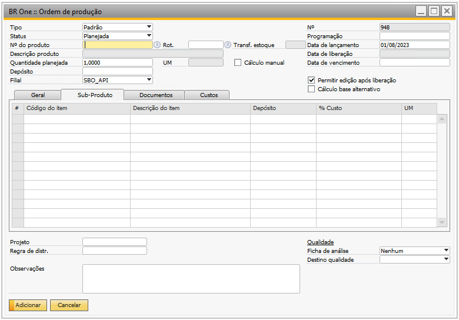
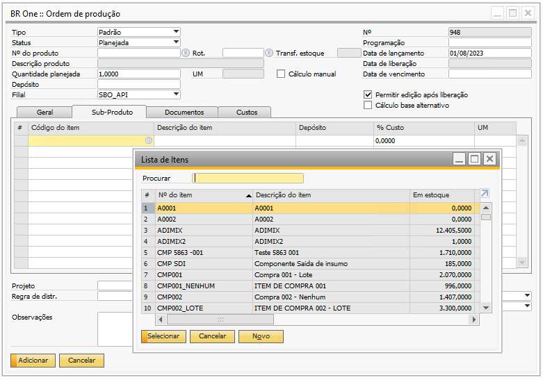
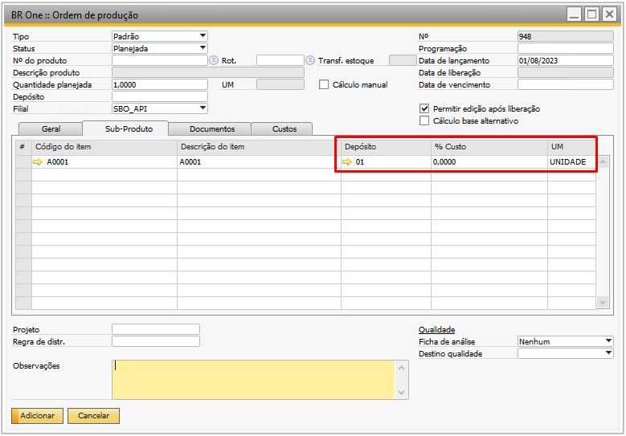
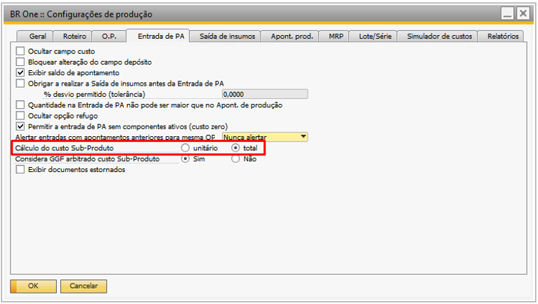
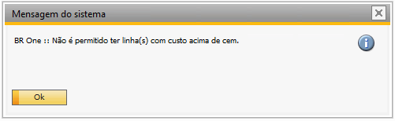
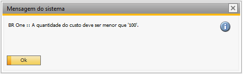
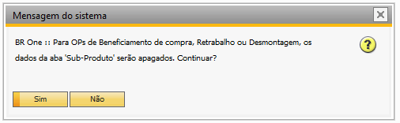

Ordem de Produção
Na tela de Ordem de Produção através do menu: Produção –> Ordem de Produção terá a aba “Sub-Produto”, onde existem os campos “Código do item”, “Descrição do item”, “Depósito”, “%Custo” e “UM”.
{kind=link}
Para adicionar um sub-produto, basta clicar com o botão direito na linha do grid e clicar em inserir linha, após, será possível inserir o item desejado, através de uma lista de itens que exibirá apenas itens administrados por nenhum ou lote.
{kind=link}
Ao adicionar o sub-produto, deve-se informar também o campo “%Custo”, os campos “Depósito”, e “UM” virão preenchidos automáticamente, porém, permitem alterações.
{kind=link}
O campo “%Custo” indica o custo de produção do sub-produto em relação ao PA, e este custo pode ser definido de duas formas “Unitário” ou “Total”, que são configuradas na tela de configuração de produção.
{kind=link}
Caso a configuração esteja como “Unitário”, não será possível definir na coluna “%Custo” de cada sub-produto um valor acima de 100%. Caso seja informado um valor acima de 100%, o addon irá retornar a seguinte mensagem de sistema:
{kind=link}
{kind=link}
BR One :: Não é permitido ter linha(s) com custo acima de cem.
Caso a configuração esteja como “Total”, a soma da coluna “%Custo” entre as linhas não poderá ser igual ou maior que 100%. Caso a soma seja maior que 100%, o addon irá retornar a seguinte mensagem de sistema:
{kind=link}
{kind=link}
BR One :: A quantidade do custo deve ser menor que “100”.
As validações abaixo acontecem tanto na tela de “Roteiro” como na tela de “Ordem de produção”. A única diferença é que na ordem de produção, se o roteiro informado tiver conteúdo na aba de “Sub-Produto”, o mesmo será copiado para a aba “Sub-Produto” da ordem de produção, permitindo alterar todos os campos, eliminar e inserir novas linhas seguindo as validações abaixo.
O item poderá ser informado pelo campo “Código do item” e pelo campo “Descrição do item” e ambos listarão somente itens que não são administrados por série. Ao informar um item “X” em mais de uma linha com o mesmo depósito, o sistema validará e retornará a seguinte mensagem em vermelho no rodapé:
{kind=link}
BR One :: Não é permitido inserir mais de uma linha com o mesmo item e Depósito na aba Sub-Produto.
O campo “Depósito” será preenchido com o depósito padrão do item selecionado ou poderá ser informado na linha manualmente, caso não seja informado, o sistema validará e retornará a seguinte mensagem em vermelho no rodapé:
{kind=link}
BR One :: Não é permitido que o depósito do item esteja em branco.
Se a base for multi-filial e for informado um depósito que não está vinculado a filial do roteiro, o sistema validará e retornará a seguinte mensagem em vermelho no rodapé:
{kind=link}
BR One :: Depósito informado na linha “x” não pertence a filial do roteiro “x”.
Se o item for de lote e estiver configurado no campo “Gerar lote automático” para validar depósito, o sistema buscará o depósito da linha do item e verificará se possuiu a flag “BR One Produção - Gerar lote automaticamente” marcada. Se sim, será permitido atualizar/adicionar, se não, o sistema validará e retornará a seguinte mensagem em vermelho no rodapé:
BR One :: O depósito “XX” do item “XXX” não está configurado para gerar lote automático.
Quando um item for controlado por lote e estiver informado a algum roteiro e/ou OP, se o usuário clicar no campo “Administrado por” da tela de Cadastro de Item, o sistema validará e retornará a seguinte mensagem em vermelho no rodapé:
{kind=link}
BR One :: Não é possível alterar o valor do campo. Existe(m) OP(s) ou Roteiro(s) utilizando o item.
Exibirá a mensagem acima também quando o item estiver sendo utilizado em algum Roteiro/OP e o campo “Gerar lote automaticamente” estiver preenchido com “Validar config. Item” nas configurações de produção e o usuário clicar no campo “Gerar lote automático” da tela de Cadastro do item.
O campo “Unidade” será preenchido com a unidade de estoque definido no cadastro do item, se o campo for apagado o sistema validará ao tentar atualizar/adicionar:
{kind=link}
BR One :: Não é permitido que a unidade de medida esteja em branco.
O campo “%Custo” deverá ser informado pelo usuário, caso não seja informado exibirá a mensagem:
{kind=link}
BR One :: Não é permitido que o custo do item esteja em branco ou zero.
Não será permitido informar o Sub-Produto para “Roteiro” de “OP de Beneficiamento de compra/venda”, “OP de Retrabalho” ou “OP de Desmontagem”.
Caso o roteiro/OP esteja com linhas de Sub-Produto preenchidas e for alterado para processo de beneficiamento de compras/vendas ou retrabalho o sistema validará:
{kind=link}
Ao clicar em “Sim” os dados da aba “Sub-Produto” serão apagados e a aba será bloqueada. Ao clicar em “Não” processo será cancelado.
As OPs poderão ser geradas através do processo de “MRP” e do “Make-to-Ordee” no pedido de venda e, se no roteiro do item estiver definido itens como Sub-Produto, eles serão levados para a OP normalmente.